| CDF of $Unif(0,1)$ distribution |
|---|
Proof:Direct computation.[QED]
Proof:Can prove using CDF or Jacobian. But most importantly you should feel why this should be true.[QED]
EXERCISE 1: Using the last theorem (and not direct computation, find $V(X)$ if $X\sim Unif(a,b)$ for some $a<b.$
EXERCISE 2: Find CF of $X\sim Unif(0,1).$
EXERCISE 3: If $X,Y$ are IID $Unif(0,1)$ find densities of
EXERCISE 4: Let $X\sim Unif(0,1),$ $Y\sim Unif(10,20),$ and $Z\sim Unif(100,101).$ Without explicitly computing their variances pick the correct option below:
EXERCISE 5: If $X\sim Unif(0,\theta),$ for some $\theta>0.$ Fix any density $f_\theta(x)$ of $X.$ Plot $f_\theta(1)$ as a function of $\theta.$
EXERCISE 6: Let $X\sim Unif(0,1].$ Define, for $k=1,...,n$, the interval $I_k = \left( \frac{k-1}{n}, \frac kn \right].$ Fix any permutation $\pi$ of $\{1,2,...,n\}.$ We shall ''scramble'' $X$ using $\pi$ to obtain $Y.$ More precisely, we define $Y = f(X)$, where for each $x\in (0,1],$ if $x\in I_k,$ then we define $f(x)$ to be the corresponding point in $I_{\pi(k)}.$ What is the distribution of $Y?$
Proof: Let $Y=F(X).$ Shall show that it has the CDF of $Unif(0,1)$ distribution: $$P(Y\leq y) = \left\{\begin{array}{ll}0&\text{if }y<0\\ y&\text{if }0\leq y < 1\\ 1&\text{if }1 \leq y\\\end{array}\right.$$ This will complete the proof, since $CDF$ uniquely determines a distribution.
We know that $F:{\mathbb R}\rightarrow[0,1].$ So $Y = F(X)\in[0,1].$ Hence $G(y) = 0$ if $y < 0$ and $G(y)=1$ if $y\geq 1.$ Also $G(0) = 0.$[Because...]Take any $y\in(0,1).$ What we plan to do now is best understood with a diagram:If $F(x)$ never attains the value 0, then clearly $G(0)=0.$ Otherwise, $G(0) = P(Y\leq 0) = P(F(X)\leq 0) = P(X\leq a)$ , where $a = \sup\{x~:~F(x)=0\}.$ Then $F(a-) = 0.$ By continuity of $F,$ we have $F(a)=0.$ So $P(X\leq 0) = 0.$ Hence $G(0)=0.$
| Want to find $b$, the rightmost point with $F(b)=y$ |
|---|
[Because...]Let $b = \sup(A).$ By continuity of $F,$ we have $F(b) = y.$ (Use the argument you used to prove intermediate value theorem in you Analysis 1 course.)Non-empty: $\because \lim_{x\rightarrow -\infty} F(x) = 0$ and $y>0,$ $\therefore \exists t\in{\mathbb R} ~~F(t) < y.$ Bounded above: $\because\lim_{x\rightarrow \infty} F(x) = 1$, and $y < 1,$ hence $\exists s\in{\mathbb R} ~~F(s) > y.$ $F$ is non-decreasing, hence $F$ is bounded above by this $s.$
[Because...]Also $\{Y\leq y\}=\{X\leq b\}.$ So $G(y) = P(X\leq b) = F(b) =y,$ as required. [QED]If $F(b) < y$ then no value in $(F(b),y)$ can be taken by $F$, which is impossible since $F$ is continuous. If $F(b) > y$, then consider any $t\in (y,F(b)).$ We shall have some $r\in{\mathbb R}~~F(r)=t.$ Then $r < b$ will also be an upper bound for $A.$
 The video has been corrected.
We have seen how we can arrive at the $Unif(0,1)$ from any continuous distribution.
Here we shall see its converse which is even stronger: Given $X\sim Unif(0,1)$ we can
manufacture a random variable $Y$ with any given distribution (not necessairily continuous)!
This result plays a
crucial role in the proof of
the fundamental theorem
of probability as well as random number generation using a computer.
To prepare for the theorem we define a sort of inverse of any CDF.
This is well-defined since if $a\in (0,1)$ then $\{t~:~F(t)\geq a\}$ is nonempty (as
$\lim_{x\rightarrow \infty}F(x)= 1$), and is bounded below (as $\lim_{x\rightarrow -\infty}F(x)= 0$ and $F$ is non-decreasing).
Here are some properties of $F^-$:
The video has been corrected.
We have seen how we can arrive at the $Unif(0,1)$ from any continuous distribution.
Here we shall see its converse which is even stronger: Given $X\sim Unif(0,1)$ we can
manufacture a random variable $Y$ with any given distribution (not necessairily continuous)!
This result plays a
crucial role in the proof of
the fundamental theorem
of probability as well as random number generation using a computer.
To prepare for the theorem we define a sort of inverse of any CDF.
This is well-defined since if $a\in (0,1)$ then $\{t~:~F(t)\geq a\}$ is nonempty (as
$\lim_{x\rightarrow \infty}F(x)= 1$), and is bounded below (as $\lim_{x\rightarrow -\infty}F(x)= 0$ and $F$ is non-decreasing).
Here are some properties of $F^-$:
Proof:
Proof: Let $Y = F^-(U).$ Then for any $a\in{\mathbb R}$ we have $$P(Y\leq a) = P(F^-(U)\leq a) = P(U\leq F(a)) = F(a),$$ completing the proof. [QED]
This shows that if we can show the existence of (or generate random numbers from) $Unif(0,1)$, then we can do so for any CDF.EXERCISE 7: Show that $F^-$ is a non-decreasing.
::EXERCISE 8: Show that $f(x) = \left\{\begin{array}{ll}e^{-x}&\text{if }x>0\\ 0&\text{otherwise.}\end{array}\right.$ is a PDF. Suggest how you may generate a random variable with this PDF starting from a $Unif(0,1)$ random variable.
::EXERCISE 9: Suggest how you may generate a random variable with $Unif(-2,3)$ distribution starting from a $Unif(0,1)$ random variable.
| Higher $\lambda$ means faster decay |
|---|
EXERCISE 10: If $X\sim Expo(\lambda)$ for $\lambda>0,$ find $E(X)$ and $V(X).$
EXERCISE 11: Find the CDF of $Expo(\lambda)$ for $\lambda>0.$ If you have $X\sim Unif(0,1),$ suggest a function $f(\cdot)$ such that $f(X)\sim Expo(\lambda).$
EXERCISE 12: If $1-X\sim Expo(\lambda)$, then show that $[X]$ has a geometric distribution. Find the parameter of the Geometric distribution.
EXERCISE 13: If $X_1,...,X_n$ are IID $Expo(\lambda),$ then show that $\min\{X_1,...,X_n\}\sim Expo(n \lambda).$
"If I take a bulb at has already been used continuously for $a$ units of time, then what is the chance that it will last for at least $b$ more time units?"From our everyday experience with light bulbs, we know that for a fixed $b$, this probability will go down with $a$, as older bulbs are less likely to burn longer. However, if $X\sim Expo(\lambda)$ for some $\lambda>0$, then this "aging effect" is curiously absent, the bulb simply "forgets its age": $$\begin{eqnarray*} P(X\geq a+b|X\geq a) & = & \frac{P(X\geq a+b,\,X\geq a)}{P(X\geq a)}\\ & = & \frac{P(X\geq a+b)}{P(X\geq a)}~~\left[\mbox{$\because \{X\geq a+b\}\subseteq\{X\geq a\}$}\right]\\ & = & \frac{\int_{a+b}^iy \lambda e^{-\lambda x}\, dx}{\int_a^iy \lambda e^{-\lambda x}\, dx}\\ & = & \cdots = e^{\lambda b}, \end{eqnarray*}$$ which is free of $a.$ This is called the memorylessness of the exponential distribution. We had encountered another memoryless distribution earlier: the geometric distribution. That was a discrete distribution supported on ${\mathbb N}.$ Indeed, it was the only memoryless discrete distribution supported on ${\mathbb N}.$ Similarly, one may show that $Expo(\lambda)$ is the only memoryless distribution with density supported on $[0,\infty).$
EXERCISE 14: Show that if $X\sim Expo(\lambda)$ then $\lceil X\rceil\sim(Geom(\theta).$ Express $\theta$ in terms of $\lambda.$
EXERCISE 15: If the definition of memorylessness is changed from
''For $a,b\geq 0~~$$P(X\geq a+b|X\geq a)$ is free of $a$''to
''For $a,b\geq 0~~$$P(X> a+b|X> a)$ is free of $a$''then the only discrete memoryless distribution is $Geom(\theta)$ distribution supported on $\{0\}\cup{\mathbb N}$ (counting number of failures before the first success). Show that this geometric is the distribution of $\lfloor X\rfloor$ for $X\sim Expo(\lambda).$
Gamma(x)
in R).
The gamma function has an interesting property similar to that of factorials.
Proof:
[QED] It is easy to show (using the substitution $u = px$) that $$\int_0^\infty x^{\alpha-1} e^{-px}\, dx = p^{-\alpha}\int_0^\infty u^{\alpha-1} e^{-u}\, du = \frac{\Gamma(\alpha)}{p^\alpha}.$$ This motivates the definion of a density: We shall denote it by $Gamma(p,\alpha).$ The order of the two parameters in this notation is not standard. Some books use the reverse order. Some typical gamma densities are shown below.| All these have $p=1.$ Note how $a$ controls the position of the ''knee'' |
|---|
| All these have $p=2.$ Again, $a$ controls the position of the ''knee'' |
|---|
| All these have $p=0.5.$ Here also $a$ controls the position of the ''knee'' |
|---|
EXERCISE 16: Find $\Gamma(1)$ and $\Gamma(2).$
EXERCISE 17: Use integration by parts to show that for $x>0$ we have $\Gamma(x) = x\Gamma(x).$ Hence argue that for $n\in{\mathbb N}$ we have $\Gamma(n) = (n-1)!.$
EXERCISE 18: Simplify $\frac{\Gamma(\alpha+5)}{\Gamma(\alpha)}$ for $\alpha>0.$
EXERCISE 19: If $X\sim Gamma(p,\alpha)$, then find $V(X).$
Proof: Direct application of the convolution formula. Or you may use MGF. [QED]
There is an interesting relation linking the gamma distribution with the exponential distribution.Proof: Hardly anything to prove. [QED]
Proof: Direct application of CF. [QED]
EXERCISE 20: If $X_1,...,X_{10}$ constitute a random sample from $Expo(2)$ distribution, then find $P(\bar X \leq 1)$ in terms of $Gamma(p,\alpha)$ CDF for suitable $p$ and $\alpha.$
::
EXERCISE 21: [rossipmjoint7.png]
EXERCISE 22: [rossdistrib1.png]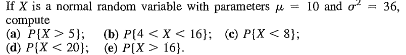
::
EXERCISE 23: [rossdistrib2.png]
EXERCISE 24: [rossdistrib3.png]
EXERCISE 25: [rossdistrib4.png]
EXERCISE 26: [rossdistrib5.png]
EXERCISE 27: [rossdistrib6.png]
EXERCISE 28: [rossdistrib7.png]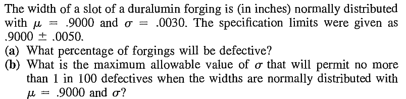
::
EXERCISE 29: [rossdistrib8.png]
EXERCISE 30: [rossdistrib9.png]
EXERCISE 31: [rossdistrib10.png]
EXERCISE 32: [rossdistrib11.png]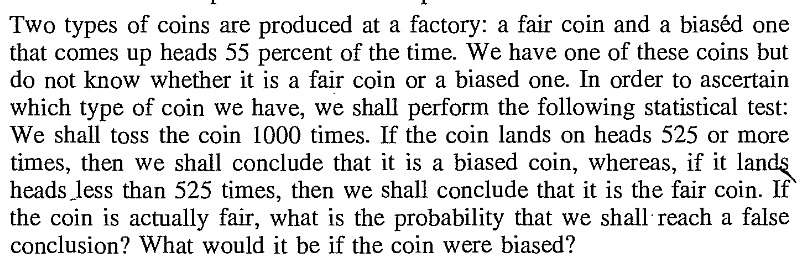
::
EXERCISE 33: [rossdistrib12.png]
EXERCISE 34: [rossdistrib13.png]
EXERCISE 35: [rossdistrib14.png]
EXERCISE 36: [rossdistrib15.png]
EXERCISE 37: [rossdistrib16.png]
EXERCISE 38: [rossdistrib17.png]
EXERCISE 39: [rossdistrib18.png]
EXERCISE 40: [rossdistrib19.png]
EXERCISE 41: [rossdistrib20.png]
EXERCISE 42: [rossdistrib21.png]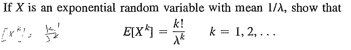
::EXERCISE 43: [rossdistrib22.png]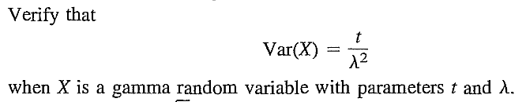
::EXERCISE 44: [rossdistrib23.png]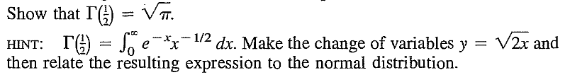
::
EXERCISE 45: [rossdistrib24.png]
EXERCISE 46: [rossdistrib25.png]
EXERCISE 47: [rossdistrib26.png]
EXERCISE 48: [rossdistrib27.png]
EXERCISE 49: [rossdistrib28.png]
EXERCISE 50: [rossdistrib29.png]
EXERCISE 51: [rossdistrib30.png]
EXERCISE 52: [rossdistrib31.png]
EXERCISE 53: [rossdistrib32.png]
EXERCISE 54: [rossdistrib33.png]
EXERCISE 55: [rossdistrib34.png]
EXERCISE 56: [rossdistrib35.png]
EXERCISE 57: [rossdistrib36.png]
EXERCISE 58: [rossdistrib37.png]
EXERCISE 59: [rosspdf9.png]
EXERCISE 60: [rosspdf15.png]
EXERCISE 61: [hpspdf21.png]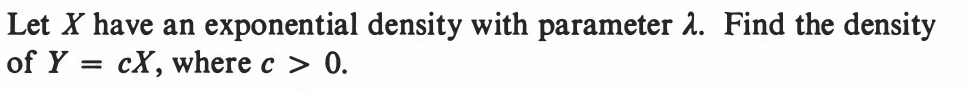
::
EXERCISE 62: [hpspdf23.png]
EXERCISE 63: [hpspdf25.png]
EXERCISE 64: [hpspdf27.png]
EXERCISE 65: [hpspdf28.png]
EXERCISE 66: [hpspdf29.png]
EXERCISE 67: [hpspdf30.png]
EXERCISE 68: [hpspdf31.png]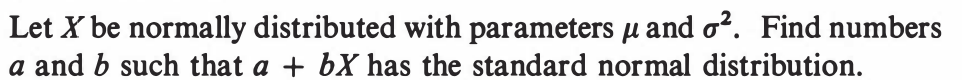
::
EXERCISE 69: [hpspdf32.png]
EXERCISE 70: [hpspdf33.png]
EXERCISE 71: [hpspdf34.png]
EXERCISE 72: [hpspdf35.png]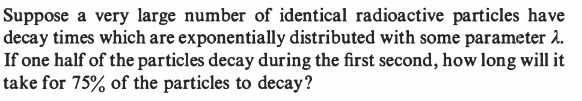
::
EXERCISE 73: [hpspdf36.png]
EXERCISE 74: [hpspdf37.png]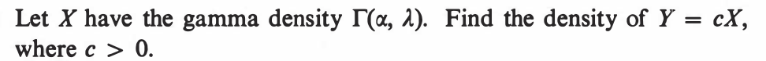
::EXERCISE 75: [hpspdf38.png]
::EXERCISE 76: [hpspdf39.png]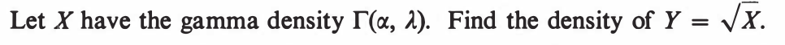
--- ::
EXERCISE 77: [hpspdf41.png]
EXERCISE 78: [hpspdf42.png]
EXERCISE 79: [hpspdf43.png]
EXERCISE 80: [hpspdf44.png]
EXERCISE 81: [hpstrans3.png]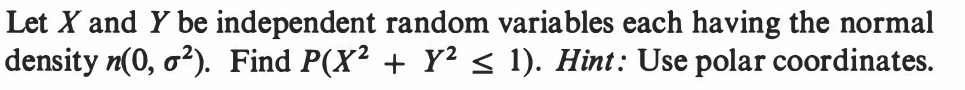
::
EXERCISE 82: [hpstrans6.png]
EXERCISE 83: [hpstrans10.png]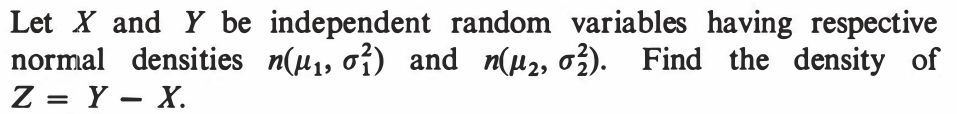
::EXERCISE 84: [hpstrans11.png]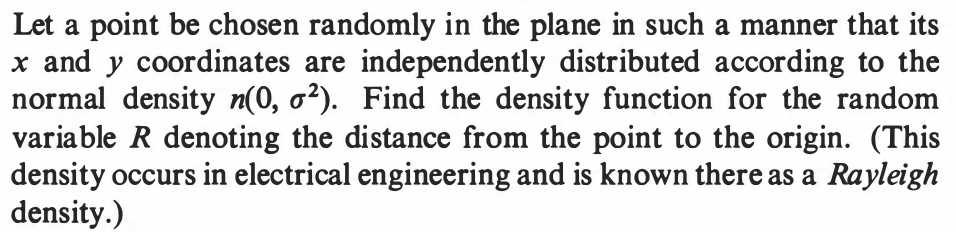
::
EXERCISE 85: [hpstrans13.png]
EXERCISE 86: [hpstrans15.png]
EXERCISE 87: [hpstrans16.png]
EXERCISE 88: [hpstrans17.png]
EXERCISE 89: [hpstrans18.png]
EXERCISE 90: [hpstrans20.png]
EXERCISE 91: [hpstrans22.png]
EXERCISE 92: [hpstrans25.png]
EXERCISE 93: [hpstrans26.png]